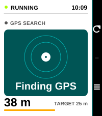
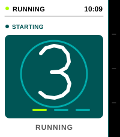

Eight endpoint positions per orbit, with a lower
redraw rate after a long search. The endpoint settles in the center
on lock.

Ten small ring steps per second; the numeral
changes only on the actual controller countdown tick.